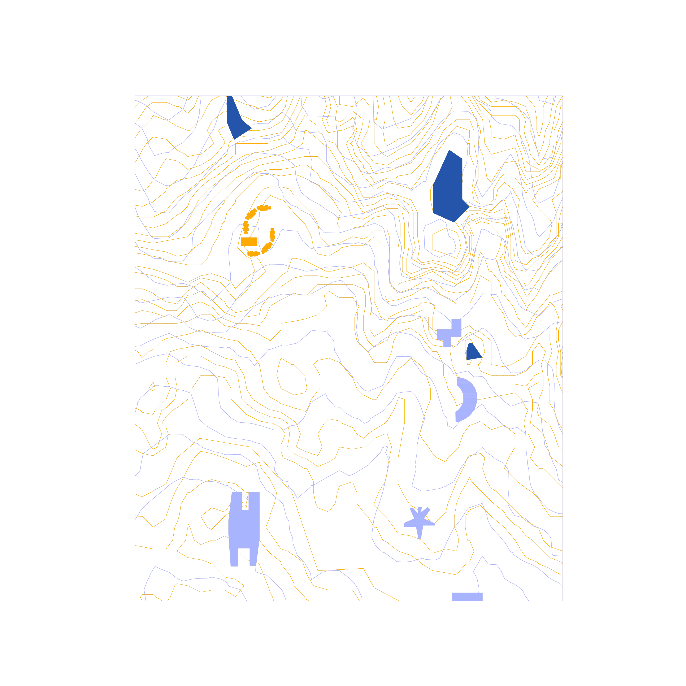
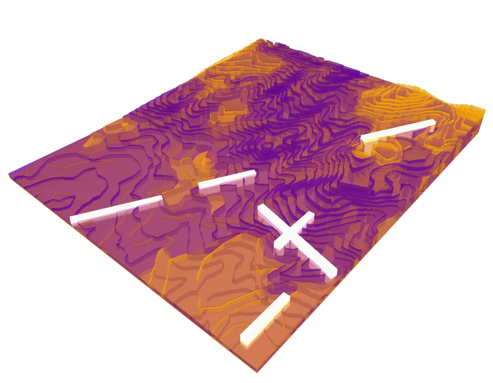
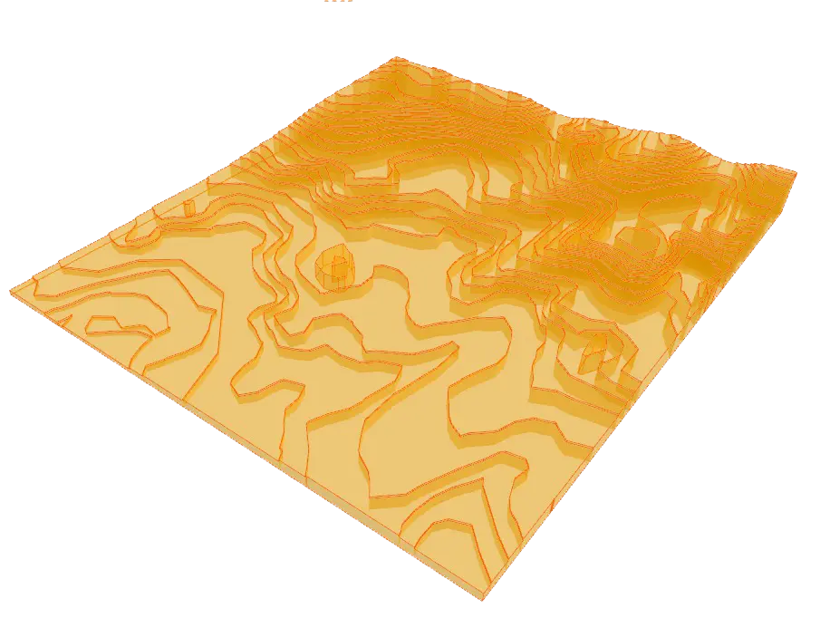
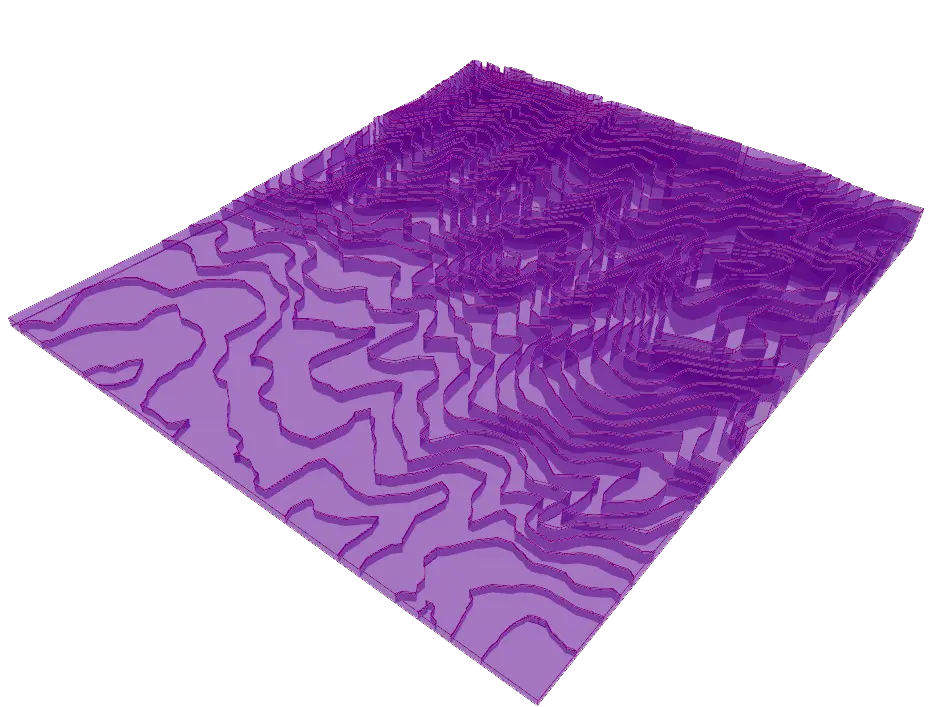
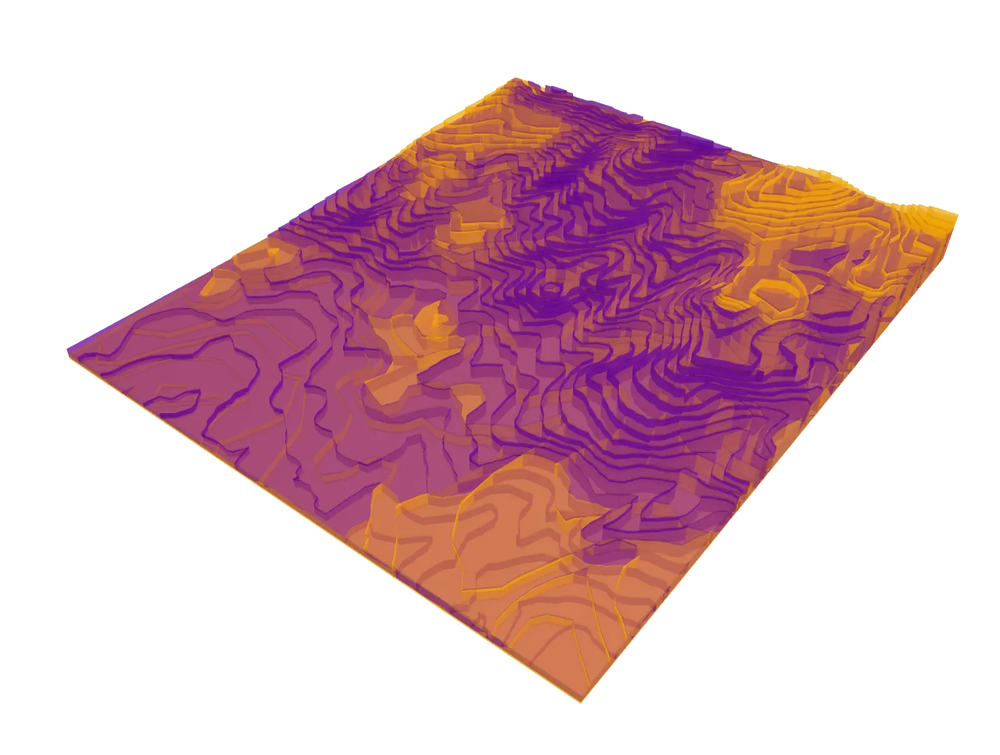
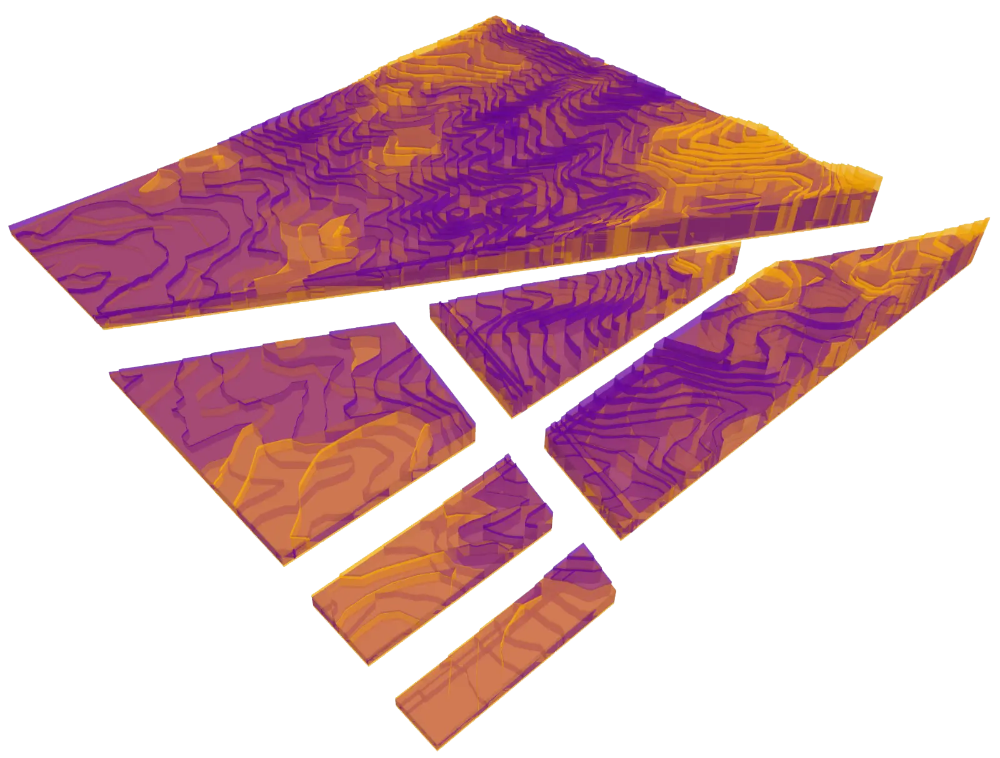
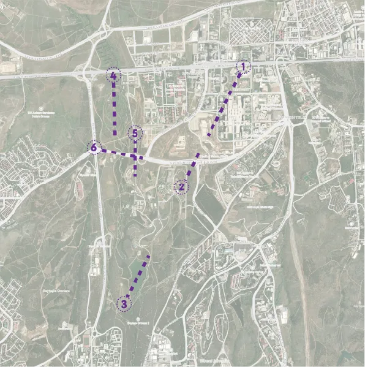

2.1.2007 - 2023 Superposed Izohips

2.2.2007-2023-Superposed-Izohips
3D-view-with-section-lines

2.3.2007-Superposed-Izohips-
3D-view

2.4.2023-izohips-3D-view

2.5.2007-2023-Superposed-Izohips-
3D-view

2.6.2007-2023-Superposed-Izohips
3D-view-fractured-from-section-lines

2.7.Section lines on real time map
- Dönem
- Spring 2026